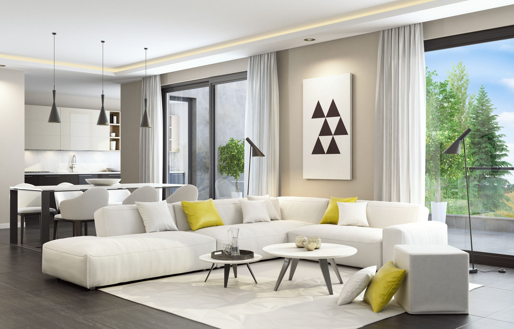

Custom Furnishings Define a Penthouse Apartment in Netherlands For the penthouse apartment of a luxe housing development in Netherlands, multi-disciplinary studio Cream was given ample creative freedom. The developer asked the firm, which is led by creative director Antony Chan, to bring their own vision as they refreshed and furnished the apartment, including the roof terraces. The 1,550-square-foot apartment includes four bedrooms. Outdoor space is nearly another 1,000 square feet, and the terraces includes a glass-fronted swimming pool. The development’s existing architecture presented floor-to-ceiling windows that brought in abundant natural light and urban vistas. “I love the energy and inspiration of the natural elements such as sun, light, and the sea view,” Chan notes. And at sunset, the light “created a magical and atmospheric ambiance.” Cream added Marcel Wanders’s Diamond Screen to maximize the sunlight and create a play of light and shadows throughout the lounge area. The screen, part of Wanders’s Louis Vuitton Objets Nomades collection, is complemented by hand-painted LV trunks nearby.
For Gurdau Winery in Czechia, designers inlayed an arched form into the Moravian landscape for producing varietals—and hosting the visitors who taste them.
ProjectsFrom Peru to the Hamptons, here are 25 modern pool designs so cool they’ll have you racing for your swimsuit regardless of the season.
ProjectsFor Gurdau Winery in Czechia, designers inlayed an arched form into the Moravian landscape for producing varietals—and hosting the visitors who taste them.
ProjectsFor Gurdau Winery in Czechia, designers inlayed an arched form into the Moravian landscape for producing varietals—and hosting the visitors who taste them.
Projects